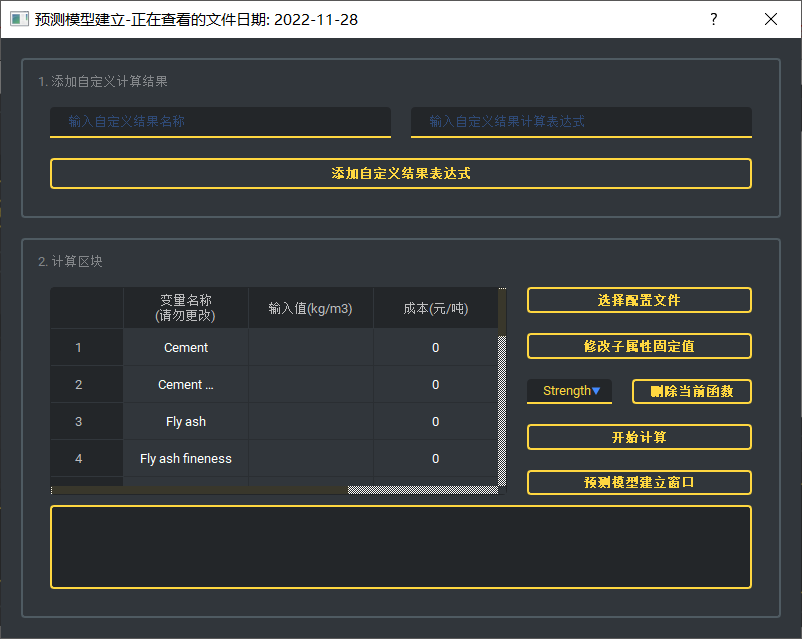

本程序的底层框架采用PyQt自主编写, 学习部分基于Sklearn, 多目标优化框架基于Pymoo。 实验和经验发现对于表格类数据, 传统机器学习具有相比于深度学习方法更高的精度和更快的速度。因此在子方法中没有MLP等深度学习方法, 未来可能会加入GANs或者Diffusion Model等方法进行数据扩充。
主要服务目标关键词为：混凝土优化, 混凝土配合比, 多目标优化
欢迎所有的bug反馈, 尤其是特殊报错的时候, 前提是你的步骤是对的。
一般可能会发生的错误, 例如数据没导入就进行分析, 导入数据格式不一致, 都进行了弹出提示框的对应。此外任何步骤顺利进行完之后都会有相应的提示。
但是毕竟Bug千奇百怪, 我的能力也有限, 因此软件底层加入了python的traceback机制, 用以完全掌握报错的信息和来源。 如果你在运行软件的过程中, 报错框为红色且一堆英文, 或者再日志信息处出现了报错信息。那么大概说明这类报错属于比较特殊的报错, 且一般和数据本身存在关系, 包括但不限于除数为0等等。
如果你有代码基础, 看得懂或者知道如何搜索这些报错的解决方法, 那么最好。如果无法解决, 可以通过联系方式向我进行反馈。
程序的目录脑图如下图所示:
所有文件的路径(绝对路径)不能有中文和特殊符号。
请注意, 在接下来的所有描述中, 我们将 x 视作自变量组分的集合(例如水/水泥/粉煤灰等), y 视作目标参数的集合(例如抗压强度/流动度/抗氯离子侵蚀性等)
如下图所示
点就完事儿
该程序的主要流程是: 导入原始表格文件, 进行每一个标签的预测模型的求解, 并进行简易测试

- 读取文件(支持xlsx, xls和csv三种格式)
- filter_xx.xlsx ==> 表示经过初筛步骤后的各算法在该标签数据上的基本指标。
- {$model_name$}_{$label_name$}_{$date$}.pkl ==> 表示基于model_name的算法模型, 得到的预测label_name的预测模型。
- {$label$}.png ==> 性能展示图的文件保存。
- pre_cfg.json ==> 预测模型构建过程中, 关于该数据集的所有重要信息的文件, 也是多目标优化流程中所需要的关键基础。
- 简易测试(右图)
- 打开输出目录
- 安全退出
提示, 如果你的数据是文本文件且主要数据部分数据之间都是逗号隔开的形式, 可以通过直接更改后缀的形式强制转化为.csv
注意, 这里所导入的文件的规范为: 第一行为x或y的名称, 从第二行开始每一行即为一组数据。 若某一类数据的值为非数字, 请提前将该类数据进行热编码或其他转化方式。 不需要将x和y分成两个进行导入, 仅支持合并。
示例如下所示:
| 水泥 | 水 | 粉煤灰 | 机制砂 | ... | 抗压强度 | 流动度 |
| ... | ... | ... | ... | ... | ... | ... |
| ... | ... | ... | ... | ... | ... | ... |
| ... | ... | ... | ... | ... | ... | ... |
之后在第一部分的白框处将会显示一个简易表格, 需要用户在这里设置各个标签的属性, 共有三列。
该表格第一列为刚导入的表格数据中所包含的标签名称。
第二列为需要用户进行设置的判断内容。 如果你的数据中, 该项是x, 请将其设置为0; 若该项是y, 请将其设置为1; 若不需要该项参加优化过程(包括但不限于该项本身无用, 该项中的值在表格中恒定, 减少参数有利于加快进程), 请将其设置为0。
第三列为归属关系的表示, 例如当水泥(假设编号为1)的含量为0时, 无论水泥强度(假设编号为3)是425还是525都不会起到任何作用。 则需要用户进行设置, 表示水泥强度归属于水泥, 在需要进行归属关系设置的行的第三列处填写主属性序号即可, 例如这里在第三行第三列填写1. 没有这类关系或者为主属性的标签请填写默认值-1。 y中元素是没有主次属性之分的, 改了也没用。
之后点击保存, 弹出提示框即可。与此同时 {$dir_path$}/output/prediction/{$today$}/ 文件夹下将会生成一个edit.xlsx, 今后若还需导入相同文件时导入它修改步骤将减少。
以上步骤完成后, 点击开始, 预测模型推理线程将会启动。在第三个区域的文本框中将会实时进行线程进度的更新, 同时若发生报错也将会进行对应的打印。 对于y中的每一个元素来说, 当预测模型建立完毕后, 第二区域中画板将会出现在测试集上该预测模型的性能展示。
当文本框中出现 "全部流程结束, 用时 xxx min" , 则说明流程完成。与此同时 {$dir_path$}/output/prediction/{$today$}/ 文件夹下将会生成四类文件, 分别是:
点击第三部分中的 "计算目标值" 即可
选择已经完成的预测模型输出过后的pre_cfg.json配置文件, 在左侧表格中会展示x对应的表格, 用户可选择在第二列中填入值, 表示百分数时, 请使用小数表达。 填完后在右侧下拉框中选择希望计算的目标值y, 之后点击计算在下方的文本框中生成对应的答案。
点击即可
由于程序以子线程方式存在, 因而推荐以安全退出按钮进行程序的退出, 防止因为预测模型构建流程未完毕强制退出而造成的程序卡死。
该程序的主要流程是: 导入已经完成的预测文件夹或已经处理好的多目标优化配置文件, 进行多目标优化流程。
完成这一步骤有两种方法, 首先来介绍第一种方法(初次使用)
- 预测模型配置文件导入
即第一个程序中所得到的配置文件pre_cfg.json
导入后即可点击下方的"优化条件设置"按钮进入条件设置界面。详见右图排布
- 设定x的上下界
在第一部分中, 所生成的表格共有三列。
第一列为x的各组分名称, 第二三列为用户所需要设置的x中各个元素的优化上下界(指最终所得出的优化结果中, x不会超过这个区间)。 如果你希望某一个x元素是定值, 则在两列中填入相同的值即可。 默认为原数据中各个x元素的最大最小值。
修改完后注意点击保存
-
设定y优化结果的上下界
第二部分的表格结构和第一部分相近
比如我们希望最终优化出来的混凝土抗压强度大于50MPa, 则可以在相应最小值处填入50, 最大值处保持默认即可
默认值为无穷小和无穷大(none)
但是相比于第一部分而言多了一列, 用来规定对于y中某元素来说, 我们希望它得到的结果时越小越好还是越大越好。 例如对于成本来说, 自然是希望越便宜越好, 这个时候就可以在最后一栏填写0; 对于强度来说, 我们希望它越大越好, 即填写1。
修改完后注意点击保存
- 设定x中各元素之间的制约关系
- 已经有了配套的多目标优化配置文件
- 开始运行
- 安全退出
由于算法本身并不知道某些客观事实, 比如水灰比, 水胶比, 砂率含水率等, 需要引入人为的先验知识进行限制。
若想引入限制条件, 则需要按一定的格式在下方长条的文本栏中输入文字, 输入完后点击 "添加限制条件" , 机会在上方的列表中显示出来。
格式为:
其中value1和value2表示表达式的上下界, value1和value2至少要有一个存在且可以为0, 不能使用大于等于号。
Expression(X(i))表示以X(i)为核心的数学表达式, X必须为大写, 括号必须为英文括号。
n表示x里面有n个元素。
关于Expression(X(i)), 举个例子, 如果你想要让水和水泥的比例在0.15到0.4之间, 并且在第二部分的表格中, 水对应的序号是1, 水泥对应的序号是4, 则:
0.15<=X(1)/X(4)<=0.4
另外一个例子, 如果你想让水和沙子加石子的比例大于0.2且上不封顶, 水的序号是1, 沙子的序号是6 ,石子的序号是7, 则:
0.2<=X(1)/(X(6)+X(7))
另外, 依据实践经验, 约束条件不可设置的太严或者太宽松。太严会导致求解空间极小, 往往没有足够的space去适应和迭代。 太宽松的话没有良好的约束, 得出的结果虽然符合需求, 但不一定会符合客观事实。
如果你想删除某个已经编辑好的条件, 则只需在列表中选中该条件后, 点击删除条件按钮即可
全部设置完毕后, 注意需事先保存前两步的处理结果后, 先点击 "保存更改"，后点击"配置文件输出" 按钮。 (因为这个时候如果你没有按三个保存, 是无法进行输出的)。 会在{$dir_path$}/output/moo/{$today$}/ 文件夹生成moo_cfg.json文件(软件底层此时并没有保存), 供主程序使用。
完成后回到主程序
此时点击 "已有配置文件导入" , 直接找到对应的moo_cfg.json文件即可。
点击按钮, 和第一个程序相同, 运行日志已经相关报错信息将会出现在最后一个部分左侧的文本框中。结果绘图在第二个区域中。
完毕后最后在{$dir_path$}/output/moo/{$today$}/ 文件夹生成两个文件, 一个为优化后的各个x结果, 另一个为其对应的y。
由于程序以子线程方式存在, 因而推荐以安全退出按钮进行程序的退出, 防止因为流程未完毕强制退出而造成的程序卡死。